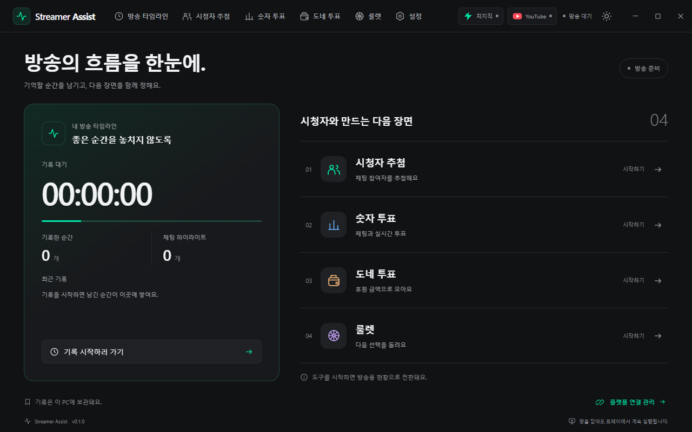

방송의 순간을 기록
방송 타임라인에 단축키로 마커를 남기고, 시청자 수와 채팅 반응을 함께 돌아봅니다. 영상·음성을 녹화하는 앱은 아닙니다.
치지직·YouTube·Twitch의 방송 채팅을 기록하고 추첨·투표·룰렛을 진행하는 Windows 데스크톱 앱입니다.
현재 앱 화면 언어는 한국어입니다. 설치 파일과 변경 내역은 릴리즈에서 확인하세요.

방송 전부터, 방송이 끝난 뒤까지
방송 타임라인에 단축키로 마커를 남기고, 시청자 수와 채팅 반응을 함께 돌아봅니다. 영상·음성을 녹화하는 앱은 아닙니다.
채팅 참여자 추첨, 숫자 투표, 지원되는 후원 메시지 투표와 가중치 룰렛을 사용합니다. 투표 종료 타이머도 설정할 수 있습니다.
날짜·플랫폼별로 기록을 검색하고 로컬 통계를 확인합니다. Twitch·치지직의 제공되는 다시보기 채팅을 가져올 수 있으며 YouTube는 방송 중 저장한 공식 API 원본을 분석합니다.
도구를 여러 탭·창으로 나누고 배치를 복원합니다. 다크·라이트 테마, 글자 크기와 단축키를 조절할 수 있습니다.
Windows 10/11 x64에서 실행합니다. 설정의 테스트 채팅으로 실제 계정이나 결제 없이 주요 도구를 체험할 수 있습니다.
설정 → 플랫폼 연결에서 치지직 채널을 추가하거나 YouTube·Twitch 계정을 연결합니다. 실제 수신에는 플랫폼 권한과 지원되는 방송이 필요합니다.
타임라인에서 방송 기록을 시작하고 추첨·투표를 엽니다. AI 분석은 원할 때 연결한 서비스와 전송 범위를 선택해 직접 실행합니다.
CHZZK · YouTube · Twitch
방송하는 플랫폼을 연결해 채팅을 기록하고 시청자와 함께 진행하세요. 연결 방식과 제공되는 기능은 플랫폼마다 다릅니다.
공개 채널 주소 또는 ID로 연결합니다. 공개 방송의 채팅을 읽어 기록·추첨·숫자 투표와 지원되는 치즈 후원 투표에 사용합니다. 비공식 읽기 방식을 사용하며 로그인 제한 방송은 지원하지 않습니다.
Google에서 방송 채널 계정의 접근을 승인해 연결합니다. 활성 방송의 채팅·지원되는 슈퍼챗을 기록·추첨·투표에 사용하고, 지원되는 YouTube 기본 실시간 투표를 연동합니다.
Twitch에서 방송 계정의 채팅 읽기 접근을 승인해 연결합니다. 채팅 기록·하이라이트·숫자 투표와 구독자 추첨을 지원합니다. Bits 후원 투표와 Twitch 기본 투표는 아직 지원하지 않습니다.
YouTube는 Google, Twitch는 Twitch의 동의 화면을 기본 브라우저에서 열어 승인합니다. 앱에 플랫폼 비밀번호를 입력하지 않습니다. 치지직은 공개 채널 주소나 ID로 연결합니다.
플랫폼 채널 정보와 연결 토큰, 방송·채팅 기록은 이 PC의 앱 프로필에서 관리합니다. 연결 토큰과 원본 기록은 암호화해 보관하며 개발자가 운영하는 애플리케이션 서버로 보내지 않습니다.
앱 설정에서 플랫폼 연결을 해제하고 저장된 기록을 삭제할 수 있습니다. Google·Twitch 계정의 연결된 앱 관리에서도 승인한 권한을 철회할 수 있습니다. 직접 내보낸 파일은 사용자가 관리합니다.
프로젝트와 지원
개발·운영: yechankun (Store 게시자: Yeong). 오류 제보와 기능 요청은 GitHub Issues에서 받습니다. 공개 게시판에는 계정 토큰이나 개인정보를 올리지 마세요.